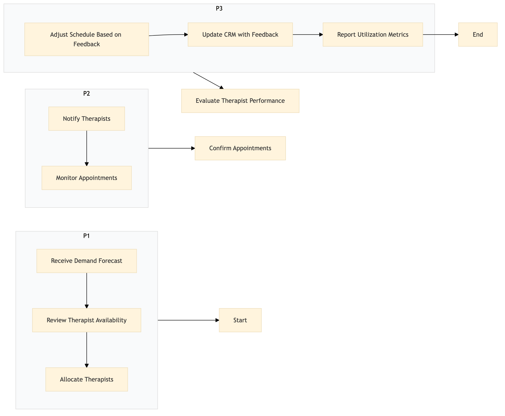

| Role | Steps |
|---|---|
| Spa Manager | 1.1 1.2 1.3 2.2 3.1 3.2 3.4 |
| Front Desk Agent | 2.1 |
| Step | Name | Role | System | Input | Output | KPI | Dec? | Exc? | Pain Point / Risk |
|---|---|---|---|---|---|---|---|---|---|
| 1.1 | Receive Demand Forecast | Spa Manager | Oracle OPERA Cloud | Demand forecast report from IDeaS G3 RMS | Updated demand forecast in Oracle OPERA Cloud | Less than 15 minutes to update forecast | N | Y | Inaccurate demand forecasts leading to over or underutilization of therapists. |
| 1.2 | Review Therapist Availability | Spa Manager | Oracle OPERA Cloud | Therapist availability calendar | Availability report | Less than 5 minutes to generate report | N | Y | Manual tracking of therapist schedules leading to errors. |
| 1.3 | Allocate Therapists | Spa Manager | Oracle OPERA Cloud | Availability report and demand forecast | Therapist schedule for the week | Less than 10 minutes to allocate therapists | N | Y | Difficulty in balancing therapist workload across different services. |
| 2.1 | Confirm Appointments | Front Desk Agent | Oracle OPERA Cloud | Guest reservation details | Confirmed appointment in Oracle OPERA Cloud | Less than 3 minutes per confirmation | N | Y | Missed appointments due to incorrect scheduling. |
| 2.2 | Notify Therapists | Spa Manager | Oracle OPERA Cloud | Therapist schedule for the day | Notification sent to therapists | Less than 5 minutes per notification | N | Y | Late notifications causing therapist no-shows. |
| 2.3 | Monitor Appointments | Spa Manager | Oracle OPERA Cloud | Real-time appointment status | Appointment monitoring report | Less than 10 minutes to generate report | Y | Y | No real-time tracking of appointments leading to last-minute changes. |
| 3.1 | Evaluate Therapist Performance | Spa Manager | Oracle OPERA Cloud | Appointment data and feedback forms | Performance evaluation report | Less than 20 minutes to generate report | N | Y | Lack of structured performance evaluation leading to inconsistent service quality. |
| 3.2 | Adjust Schedule Based on Feedback | Spa Manager | Oracle OPERA Cloud | Performance evaluation report | Adjusted therapist schedule | Less than 15 minutes to adjust schedule | N | Y | Inability to quickly adapt schedules based on feedback. |
| 3.3 | Update CRM with Feedback | Spa Manager | Marriott Bonvoy CRM | Guest feedback and therapist performance data | Updated guest profiles in CRM | Less than 10 minutes per update | N | Y | Manual updating of CRM leading to outdated information. |
| 3.4 | Report Utilization Metrics | Spa Manager | Oracle OPERA Cloud | Therapist utilization data | Utilization report | Less than 10 minutes to generate report | N | Y | Lack of accurate metrics for resource allocation decisions. |
This process outlines how a full-service Marriott hotel schedules and utilizes therapists for spa and wellness services. It ensures efficient resource allocation and guest satisfaction.